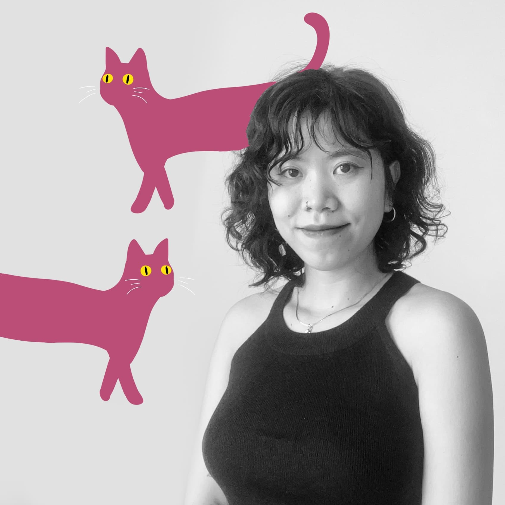

- A Graphic designer from Vietnam (please don’t bring up the war or I’m gonna have a meltdown)
- Trying to figure out what “balance” means
- 2+ years of experience in in-house and 3+ in freelancing
- Yes, I made a website to impress other designers
- Any projects? Not even project? Gossip? Rant?... Bring it on!!
